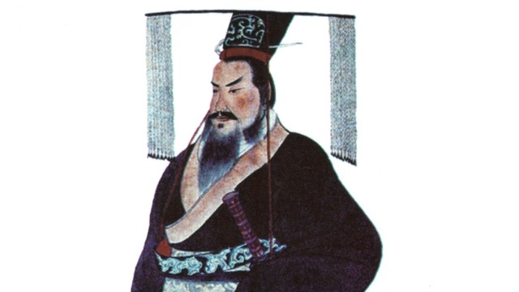

もともと私はテレビをほとんど見ません。なぜというわけではないのですが、社会人になって気がつくとテレビをつけることすら稀になっていました。世間では「テレビ離れ」が問題になり、ＣＭが集まらない、影響力が低下した、と言われていますが、特に理由もなく見なくなっている人が増えているのでしょう。
さて、そんな私が、はまっていた歴史ドラマがあります。それは『大秦帝国』 。そんな番組あったっけ？ と思われるのも無理ありません。ケーブルテレビでやっていた海外ドラマなのです。一時期（今も、かな？）韓流ドラマが流行りましたが、この『大秦帝国』は中国のドラマ。いわゆる「華流」 というやつです。
皆さんは『秦』というとなにを思い浮かべますか？ 中学校の時に「秦の始皇帝」という人のことを習ったことがあるでしょう。万里の長城をつくった王様です。この『大秦帝国』は、秦の始皇帝の数世代前を舞台にしています。時は戦国時代、「周」という王朝が長く中国を治めていましたが、徐々に力を失ってしまいます。変わって台頭したのが、「諸侯」と呼ばれる地方の支配者達。周を名目上の君主としながらも、諸侯は覇権を求めて激しく争います。そんな中、西の野蛮な国（地方）とさげすまれてきた秦が頭角を現します。商鞅（しょうおう）という政治家の国内改革が成功し、強大な軍事力を持つ大国にのし上がりました。物語は、この商鞅の時代のすぐ後、秦がいよいよ中原（中国の中心地域）に進出する時代を描いています。
「合従」「連衡」「張儀」など、中国史好きは誰しもが知っているできごとや名前が出てくるこの話ですが、私がおもしろいと思ったのは、「違和感」です。物語の中では、現代の我々ならば特に怒らないようなできごとで登場人物が激怒したり、大したことを言っているわけでもない人物を「偉人である」と褒めそやしたり、いまいちピンとこない場面がよく出てきます。中国の古代史は記録が豊富に残っていますので、その記録に忠実にドラマ化しているのかもしれませんが、それでも納得できないところは残り ます。たとえば、ちょっとした昔話（故事）を知っているだけで知識人扱いされたり、状況が分かっていれば誰でも想像できる敵国の動向を言い当てただけで天才策士扱いされたり…。
しかし、いろいろとこの違和感の理由を考えてみると、いくつか気付くことがあります。まず「知っている」ということのスゴさです。古代中国（今から2500年くらい前ですよ！）では、現代のようにシステム化された教育機関が普及しているわけではありませんから、まともに文字を読めるだけでもちょっとすごいことなのです。それに加えて、昔のできごとを書いた書籍を読んで知識を蓄えられるのはとてもすごい。そもそも書籍自体が現代のように流通していませんから、それにアクセスしただけで、特権的な立場に立つことができます。さらに、上に書いた「状況が分かっていれば」は、電話もネットもない時代に幅広く情報を収集できる能力が前提になります。それを可能にする情報網の構築も「込み」で天才扱いされているわけです。
このように、違和感は「私たちが現代当たり前に享受しているもの」の貴重さ を教えてくれます。その最たるものが「教育」！ 教育の現場で働くものとして、改めてその大切さを痛感しています。
ちょっと重たいことを書きましたが、『大秦帝国』、役者さんも演技派で、シナリオもおもしろい良作です。是非見てみてくださいね！